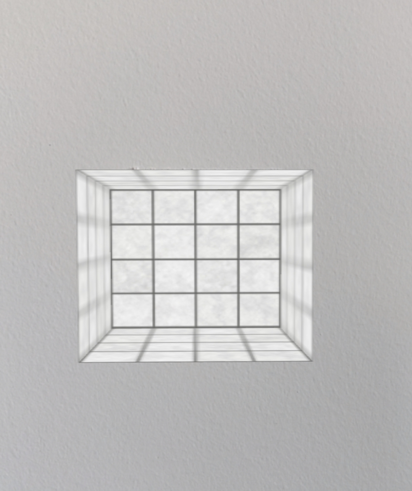
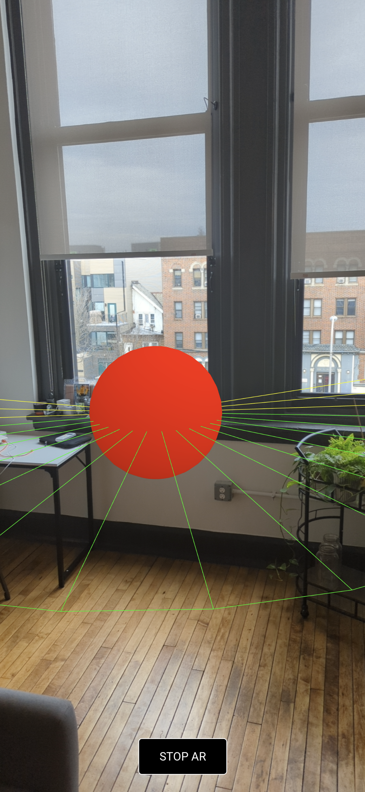
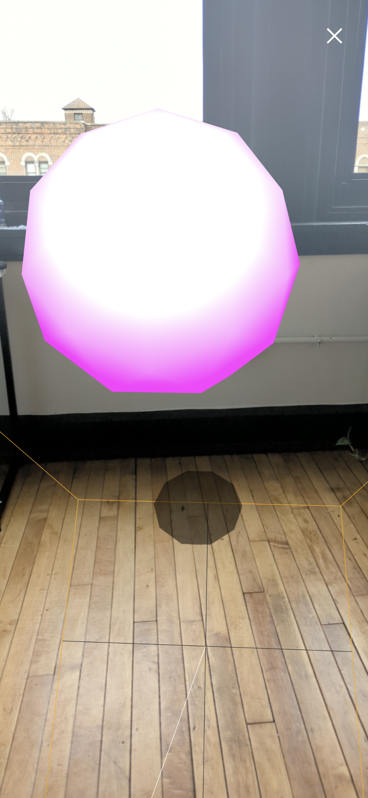
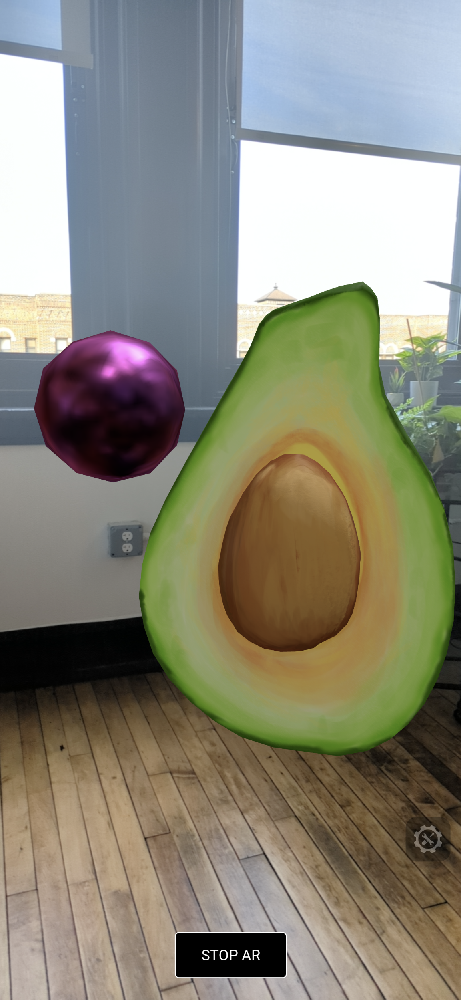

WebAR experiments
The goal of this collection is to provide a set of basic examples that introduce the various features in the Javascript-based Augmented Reality (AR) library and Three.js.
AR.JS | WebXR | Accessibility practices
AR.JS
AR.JS is a web
library that is built on top of the ARToolKit library.
ARToolKit solves two key problems in AR: viewport tracking and virtual interaction, it detects the device camera
and places a virtual camera to calculate the point to overlay the 3D graphics.
AR.JS main features are Image Tracking, Location based AR and Marker tracking.
In this link
you can find a boiler-plate for AR.js + Three.js + Webpack.
These examples focuses on Marker Tracking:
Refraction

Creates a rotating torus knot above a custom marker. The surface of the knot refracts the scene behind it.
source code
Reflection and Refraction

Bubbles come out of a marker, cast shadows and reflect the physical environment.
source code

Hole in the wall

A "hole in the wall" effect. Uses a box geometry to mask the hidden parts of the hole.
source code
Hole in the wall #2

Another "hole in the wall" effect, masking a 3D model indside a box geometry.
source code
Poratl

Creating a "portal to another world" effect. Only visible from one side.
Not very robust. Inspired by Lee Stemkoski portal
view.
source code
Video on marker

Video texture start with marker trigger, evolves to particles noise when finished.
source code
webXR
webXR
is a group of standards which are used together to support rendering 3D scenes to hardware designed for
presenting virtual worlds (VR)
or for adding graphical imagery to the real world (AR).
In this link
you can find a boiler-plate for webXR + Three.js + Webpack.


3D model animation

Loading 3D animated jellyfish model in webXR.
* Model by the webXR academy.
source code


Spatial Audio

positioning spatial audio to come out from a virtual object.
source code using resonance audio library
source code using three.js
Hit Test

"Hit testing" (aka "raycasting") is the process of finding intersections between 3D geometry and a ray,
comprised of an origin and direction.
In this example, if a surface was detected a reticle shown and with a tap geture a 3D cylinder is added.
source code
Shadows

Adding shadows to the virtual scene – by using shadow material and Hit Testing to attach
an invisible plane to the physical world floor.
source code
Light Estimation (Android only)

Light Estimation is an experimental feature of webXR that allows to use the
real environment light condition to affect the 3D models. This feature costs a lot of computational power.
source code
Image tracking (Android only)

Image tracking is an experimental feature of webXR that allows to track an image feature and place a virtual
object on top of it.
source code
Accessibility practices
a series of exercises that supports accessibility in order to investigate how inclusive AR techniques can build meaningful design solutions for all.
Lost marker notification

Adding notification when marker is lost to assit in re-aiming the camera.
source code
Found marker vibration

Adding device vibration when marker is found, affecting the 3D sphere.
source code